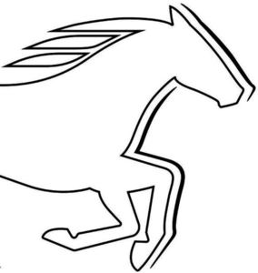

Trade Mark Journal No.2025/013 28 March 2025
WO0000001845001 (3,9,14,18,24,25,35)
Office of origin: European Union Intellectual Property Office (EUIPO)
Date of International Registration:23 October 2024
Date of designation in the UK:
23 October 2024

International priority date claimed: 23 April 2024
(European Union Intellectual Property Office (EUIPO))
(019017642)
- Class 3
- Soap; perfumery; ethereal oils; cosmetics; hair lotions; dentifrices; deodorising preparations for personal use (perfumery); room sprays as fragrance sprays.
- Class 9
- Spectacles; sunglasses; spectacle cases.
- Class 14
- Goods in precious metals and/or their alloys and coated therewith, namely works of art, ornaments, key rings [split rings with trinket or decorative fob], jewellery charms and decorative articles [trinkets or jewellery] for personal use; jewels; ornaments [jewellery, jewelry (am.)]; paste jewellery; clocks; wristwatches; pocket watches.
- Class 18
- Goods made from leather and imitation leather, namely bags and other small leather goods and containers not specifically designed for the objects to be carried, namely purses, pocket wallets, key bags, labels of leather, holders in the nature of cases for keys, purses, luggage tags; cosmetic purses; toiletry bags; handbags; shopping bags; sport bags and packs; briefcases; school knapsacks; rucksacks; trunks, suitcases, traveling bags; umbrellas and parasols.
- Class 24
- Textiles; fabrics; curtains; roll-up curtains of textile or plastic; table linen; table covers; handkerchiefs of textile; fabric of imitation animal skins; non-woven fabrics; towels and face towels of textile.
- Class 25
- Clothing, in particular trousers, denim jeans, shirts and blouses, skirts and dresses, shorts, tee-shirts, tops, sweaters, sweat shirts, parkas, coats, jackets [clothing], scarves, pyjamas, nighties, dressing gowns, bathrobes, foundation garments and undergarments, corsets [underclothing], socks, stockings; sportswear; workwear; clothing for children; clothing of leather; waist belts; braces [suspenders] for clothing; headgear; footwear; shoes; sports shoes.
- Class 35
- Advertising; marketing and public relations services; promotion services; business management; business administration; office functions; bringing together, excluding the transport thereof, for the benefit of others, in relation to the following goods: clothing and clothing accessories, shoes, headgear, for purposes of the aforesaid services, enabling customers to conveniently view and purchase those goods from a retail store, by catalogue and electronic media; bringing together, excluding the transport thereof, for the benefit of others, in relation to the following goods: handbags and leather goods including small leather goods, namely, pouches, wallets, key cases, key tags, labels of leather, purses, luggage tags, toiletry pouches, toilet bags and cases (for storing spectacles and/or keys), for purposes of the aforesaid services, enabling customers to conveniently view and purchase those goods from a retail store, by catalogue and electronic media; bringing together, excluding the transport thereof, for the benefit of others, in relation to the following goods: perfumery and cosmetology, sporting articles, costume jewellery and time instruments, eyeglasses, sunglasses and other fashion goods and lifestyle goods, namely, textiles, fabrics, curtains, window shades, household linen, bed linen and table linen, bed and table cloths, handkerchiefs of textile, textile imitations of leather, fleeces, hand towels and face cloths, made from the following materials: textile goods, for purposes of the aforesaid services, enabling customers to conveniently view and purchase those goods from a retail store, by catalogue and electronic media; bringing together, excluding the transport thereof, for the benefit of others, in relation to the following goods: textiles, fabrics, curtains, window shades, household linen, bed linen and table linen, bed and table cloths, handkerchiefs of textile, textile imitations of leather, fleeces, hand towels and face cloths, made from the following materials: textile goods, for purposes of the aforesaid services, enabling customers to conveniently view and purchase those goods from a retail store, by catalogue and electronic media; presentation of goods for sales purposes, enabling customers to compare and purchase those goods; procurement services for others [purchasing goods and services for other businesses]; management services for retailing, mail order and/or online businesses; business consultancy and information, in relation to the following fields: retail shops, especially, sale, demonstration of goods and business plans; import-export agency services; franchise management in connection with the operation or management of commercial enterprises.
MUSTANG- Bekleidungswerke GmbH + Co. KG
Representative: CORNEA FRANZ RECHTSANWÄLTE PARTNERSCHAFT MBB, Berliner Platz 10, 97080 Würzburg, GERMANY